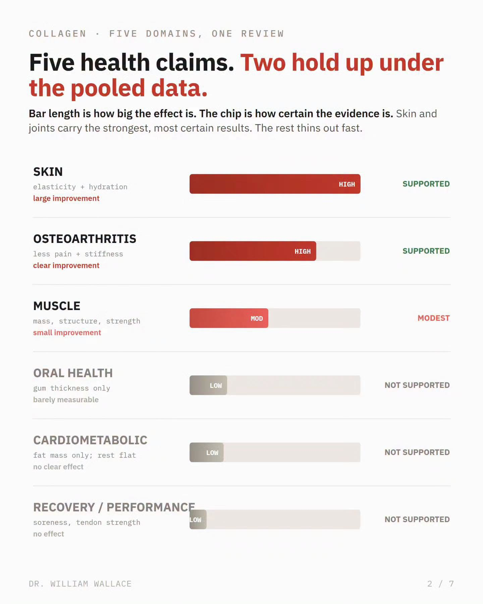
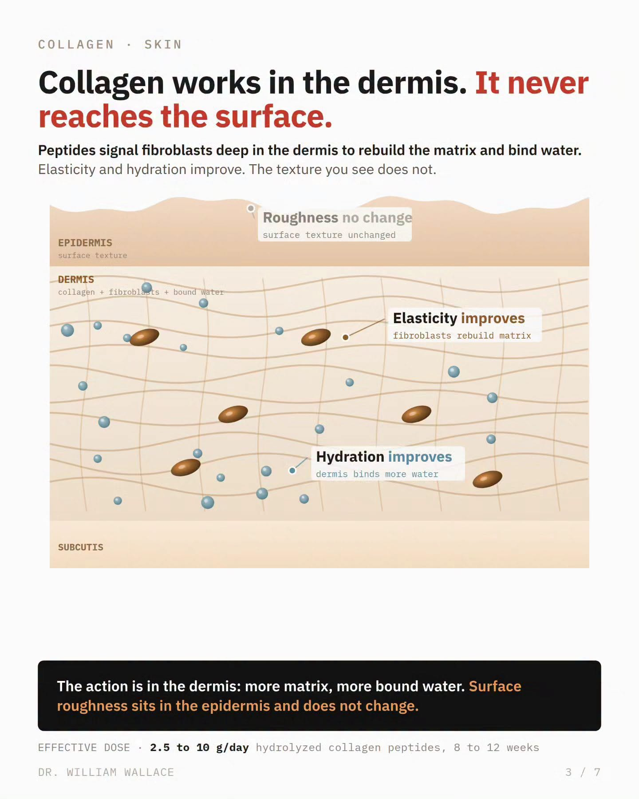
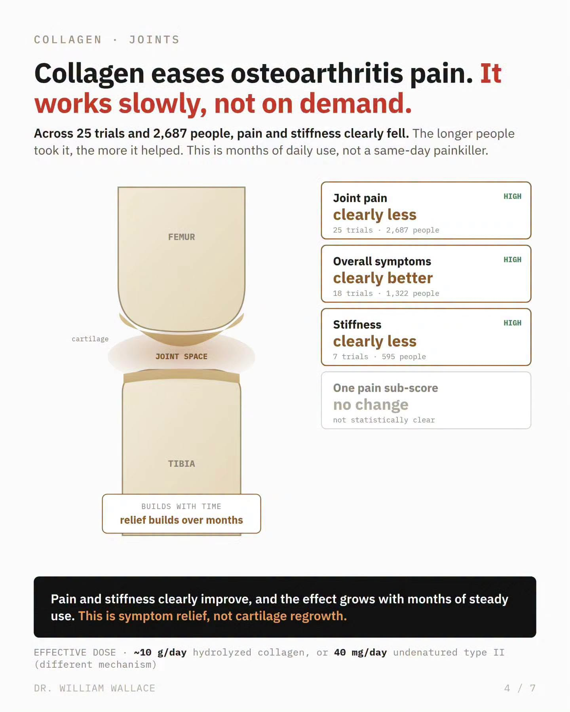
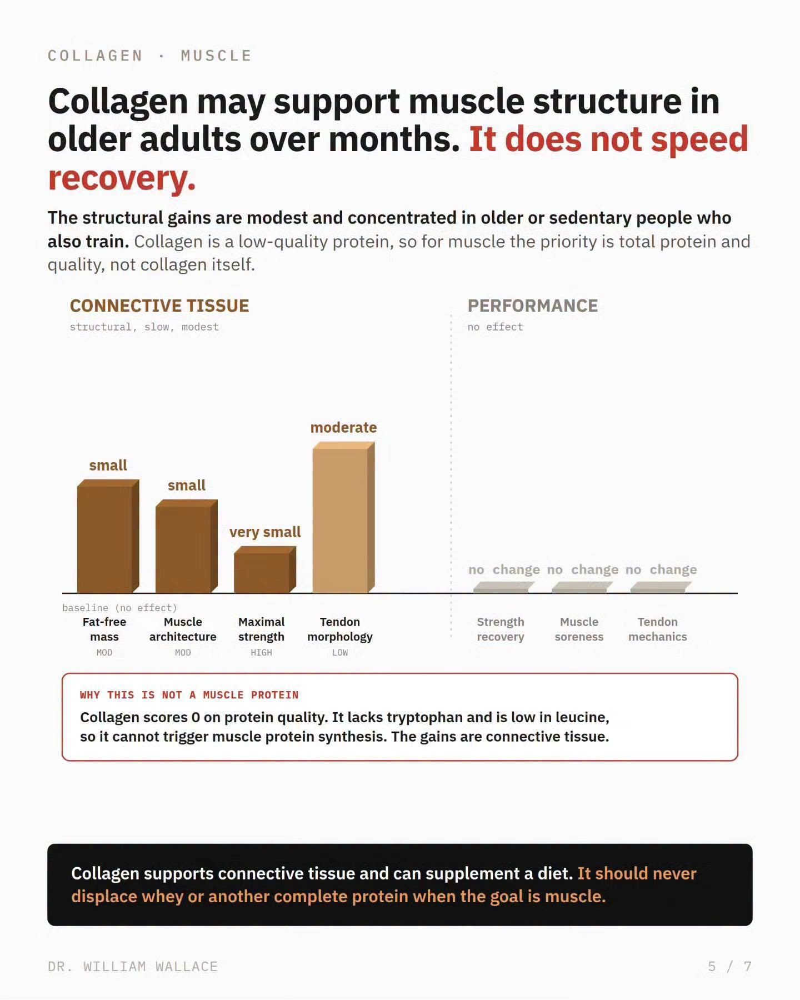

A huge review of 113 trials in almost 8000 people demonstrates that collagen supplements improve skin hydration and elasticity, as well as reduce pain and stiffness from osteoarthritis.
There was also a small muscle-building benefit in older adults.
#collagenHD #skinHD #arthritisHD #muscleHD #proteinHD #proteinsummaryHD
The largest collagen review to date was just published: 16 systematic reviews, 113 trials, 7,983 people.
Collagen is sold for your whole body, but the pooled data says it earns its keep in two places.
Skin and joints rise to the top of positive outcomes. Elasticity and hydration improved with high-certainty evidence. Osteoarthritis pain and stiffness fell, also high certainty, building over months of daily use. That is symptom relief, not cartilage regrowth.
Then there's muscle. The muscle literature has been blunt for years: collagen is a poor muscle protein. Head-to-head trials show whey beats it for muscle protein synthesis, because collagen is a lesser quality protein source. If you are young, training, and eating enough protein, collagen does nothing for your muscle. So why did this review still find a small muscle signal? Look at who was studied. The positive results cluster in older, sarcopenic adults doing resistance training. The archetype: 60 sarcopenic men averaging 72 years old, where collagen plus training added more fat-free mass than training alone. The mechanism isn't collagen building muscle. It's that in an aging, trained muscle with room to gain, any extra protein helps, and collagen's glycine and proline support the connective-tissue scaffold around the muscle.
So the effect is structural and slow, not a performance aid. It does not speed recovery, cut soreness, or help trained athletes.
In sum, collagen is skin and connective-tissue support
Sources:
- Ravindran et al., Aesthetic Surgery Journal Open Forum, 2026. DOI: 10.1093/asjof/ojag018
- Zdzieblik et al., British Journal of Nutrition, 2015. DOI: 10.1017/S0007114515002810
- Oikawa et al., American Journal of Clinical Nutrition, 2020. DOI: 10.1093/ajcn/nqz332




